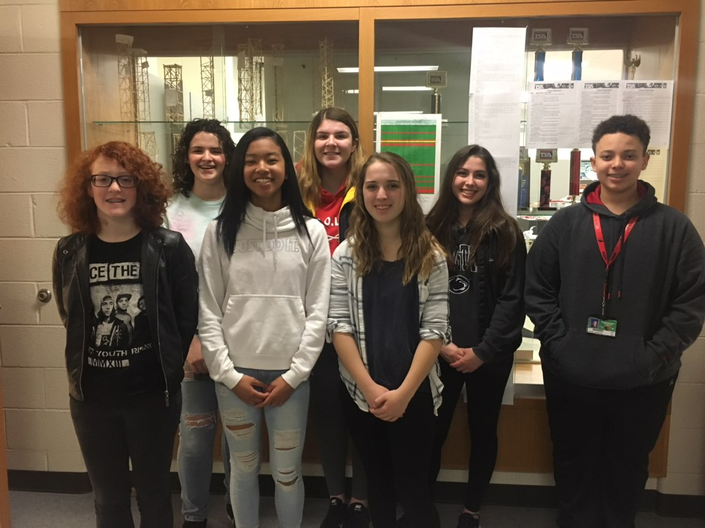

Our Chapter
The newly founded Boyertown Freshman Academy's TSA chapter is a group of hard-working, involved individuals who participate in the community, perform in competitions, and fundraise for other organizations like the American Cancer Society, along side of the Boyertown Senior High School TSA chapter.
Chapter Information
Boyertown Freshman Academy TSA was founded in 2017 as an extension of BASH TSA. The purpose of this chapter is to help transitiion and prepare the incoming freshman in order to succeed on the high school level. Members of this chapter are held to the same standards as the more experienced members of BASH TSA, and follow the high expectations and specific guidelines which are consitent throughout all Boyertown TSA chapters.
Members of the chapter are required to attend mandatory meetings on the first Wednesday of every month to discuss business, and are expected to frequently attend work days on Tuesdays and Thursdays. Students are responsible for paying all fees and dues, along with participating in fundraising efforts. Proper TSA attire must be worn by members at competitions, and the rules set in place by both TSA, the advisor, and the school are to be followed at all times.
Boyertown High School TSA requires students to attend the regional and state conferences, and to compete in no less than three events. One of these events is required to be an on-site competition.

Chapter Leadership
Any member who has been involved in TSA is eligible to apply for an office within our chapter. To apply, a member fills out a packet with prompts regarding their goals for the chapter and individual ability. The chapter advisor then chooses an officer team, which works hard throughout the year. Boyertown's officer team meets occasionally during free period to discuss chapter business.